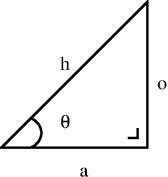

CS2900 Topic 1
Hugh Shanahan
May 3, 2020
Preamble
Downloads
All details for this course can be found on Moodle
I will attempt to create a slidecast of each lecture that will be placed on moodle as well.
Who am I ?
Hugh Shanahan (but you can call me Hugh).
My office is in the Bedford Building.
Here are my office hours - please come by the admin office and ask them to give me a call.
Monday 15-16
Tuesday 15-16
If you want some guaranteed time with me to answer question etc., please email me to arrange an appointment.
Assignments
Three quizzes - each worth 10% of the final grade.
Each quiz will be 30 minutes in length so it can be done in an hour slot.
A practice quiz will be set up this week.
Deadlines are available on
Exam
- Answer all questions !
Labs
Labs will run on a weekly basis.
Thursday 10-12, Bedford 0-04 to 0-0.06, PC01.
Class will be divided into two; each one taking one hour.
No lab this week.
We’ll be using Python and NumPy for this course.
More specifically we will be using Jupyter notebooks and Binder.
Motivation
Motivation
This course will focus on one, very regular class of data structures.
Namely, vectors and matrices with almost invariably floating point entries.
Linear Algebra is the branch of Mathematics to deal with this.
Why bother??
Linear Algebra
Linear Algebra is a vast branch of Mathematics with hugely powerful tools for us to use.
Linear Algebra has a number of direct applications in Computer Science and every Computer Scientist should understand it. For example
Computer Graphics
Computer Vision
Machine Learning and Artificial Intelligence
Graph Theory
Mathematics
This course is shamelessly Mathematical BUT
I assume no prior knowledge of Linear Algebra.
It is very much grounded in concrete examples from CS.
Definitions and Background Mathematics
Definitions
| Type | Symbol | Examples |
|---|---|---|
| Natural numbers | \(\mathbb{N}\) | \(0\),\(1\),\(2\),\(\dots\) |
| Integers | \(\mathbb{Z}\) | \(\dots\),\(-2\),\(-1\),\(0\),\(1\),\(2\),\(\dots\) |
| Reals | \(\mathbb{R}\) | \(-\pi\),\(0\), \(e\), \(100.03\) |
| Complex numbers | \(\mathbb{C}\) | \(3.0 + 4.95 i\) |
Notation
| Symbol | Meaning |
|---|---|
| \(\equiv\) | Defines |
| \(\implies\) | This Implies |
| iff | If and Only if |
Trigonometry

\[\begin{aligned} \cos{\theta} = \frac{a}{h} \;\; &, & \sin{\theta} = \frac{o}{h} \;\; , \\ \cos{(-\theta)} = \cos \theta \;\; &,& \sin{(-\theta)} = -\sin \theta \;\; \\ \cos^2{\theta} + \sin^2{\theta} &=& 1 \;\; , \\ \sin{(a+b)} &=& \sin{a} \cos{b} + \cos{a}\sin{b} \;\; , \\ \cos{(a+b)} &=& \cos{a} \cos{b} - \sin{a} \sin{b} \;\; . \end{aligned}\]
The number line
The number line
First steps in understanding numbers (\(\mathbb{Z}\)).
The reals
Can add in reals easily in this picture \(\dots\) (\(\mathbb{R}\)).
Direction
Can think of an arrow from the origin to each number on the number line.
Arrow is length 4.5 going in a positive direction.
Direction
Other arrow is length 1.66 going in a negative direction.
Operations - scaling
Can scale the length of an arrow.

Arrow of length 4.5 is scaled by a factor 1.5.
Operations - addition
Can add arrows - just put "tail to head".
Arrow of length 4.5 going in positive direction plus arrow of length 2.5 going in a negative direction results in an arrow of length 2.0 going in a positive direction.
Operations - product
Multiplying the signs tells us if the arrows are going in the same or opposite direction.
Two dimensions
Adding another number line
Move into 2 dimensions.
Moving up a dimension
Instead of a position on the number line. You now have coordinates, represented by a pair of numbers \((a,b)\).
For the most part we will assume that these numbers are reals \(a \in \mathbb{R}\), \(b \in \mathbb{R}\).
Formally, these are elements of the Cartesian product \(\mathbb{R} \times \mathbb{R}\) (go and check your CS1860 notes).
But we could have grids which are \(\mathbb{N} \times \mathbb{N}\), \(\mathbb{Z} \times \mathbb{Z}\), \(\mathbb{C} \times \mathbb{C}\) and so on.
A coordinate
Vectors
Just as in the 1-d example, we can draw arrows from the origin to points on this grid.
We don’t call these arrows, we call them vectors.
Vectors
Notation
For reasons that will become clear we describe them as columns rather than rows. \[\begin{pmatrix}1.1 \\ 2.5 \end{pmatrix}, \begin{pmatrix}-3.7 \\ 0.34 \end{pmatrix}\]
As variables we use the following notation \[\underline{v} = \begin{pmatrix}-4.67 \\ 0.76 \end{pmatrix}\]
Notation contd.
In textbooks you will also see the following alternatives .… \[\mathbf{v}\;\; , \;\; \vec{v}\] they all mean the same thing - a vector !
If we want a vector in row form then there is an explicit operation to get that.
\[\underline{v}^\intercal = \begin{pmatrix}-4.67 & 0.76 \end{pmatrix}\]
Exercise
GO TO https://moodle.royalholloway.ac.uk/mod/quiz/view.php?id=462536 NOW